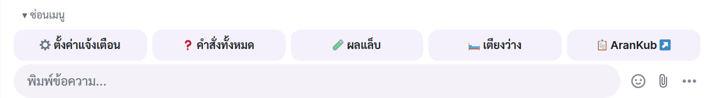
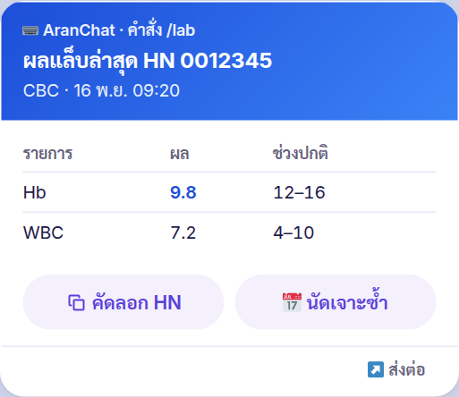

การ์ด ปุ่ม คำสั่ง และมินิแอป
ต่อจาก คู่มือส่งแจ้งเตือน: ระบบของคุณส่งการ์ดที่จัดหน้าได้ (ตาราง ขั้นตอน ตัวเลขสรุป รูป) พร้อมปุ่มให้กดในแชท แล้วรับผลการกดกลับมาที่ระบบ — อนุมัติงาน รับเคส นัดหมาย ได้จบในแชท ข้อมูลทั้งหมดอยู่บนเซิร์ฟเวอร์ของโรงพยาบาล
POST /api/notify ใส่ sections / buttonsแม่แบบการ์ดสำหรับงานโรงพยาบาล
ภาพทุกใบคือการ์ดจริงจาก JSON ด้านล่าง — คัดลอกไปแก้ข้อความ แล้วใส่ to (ผู้รับ) ก่อนส่ง
กำลังโหลดแม่แบบ…
โครงสร้างการ์ด
ทุกช่องไม่บังคับ ยกเว้น event และ title · แอปรุ่นเก่าที่ยังไม่รู้จักช่องใหม่ จะเห็นการ์ดแบบเดิม/ข้อความธรรมดา
| ช่อง | ใช้ทำอะไร |
|---|---|
level | สีหัวการ์ด: info น้ำเงิน · success เขียว · warning ส้ม · critical แดง (priority: "urgent" = แดง + ปุ่มรับทราบ + เตือนซ้ำ/ส่งต่อ) |
subtitle | บรรทัดรองใต้หัวข้อ |
image | รูปใหญ่ใต้หัวการ์ด: https://… (≤ 2 MB — เซิร์ฟเวอร์ดึงแล้วเก็บในแชทให้ แอปไม่ต้องโหลดจากภายนอก) |
fields | [["HN","0012345"], ["K","2.4","crit"]] — ช่องที่ 3 คือโทนสี: crit แดง ‼ · high ส้ม ↑ · low น้ำเงิน ↓ · ok เขียว · muted จาง |
sections | ส่วนเนื้อหา (สูงสุด 8) — ดูตารางถัดไป |
buttons | ปุ่ม (สูงสุด 4) — ดู ปุ่ม |
quick_replies | ปุ่มตอบด่วนเหนือช่องพิมพ์ [{"label":"ดูอีกครั้ง","text":"/lab 0012345"}] หายเมื่อมีข้อความใหม่ (สูงสุด 6) · ข้อความลงท้ายด้วยเว้นวรรค = ใส่ลงช่องพิมพ์ให้พิมพ์ต่อ |
approvers | ผู้มีสิทธิ์กดปุ่มสั่งงาน ["arankub:12", "@user:__SERVER__"] — ไม่ใส่ = ทุกคนที่เห็นการ์ด (ระบบควรตรวจสิทธิ์ซ้ำที่ webhook เสมอ) |
ส่วนเนื้อหา (sections)
| type | ตัวอย่าง |
|---|---|
text | {"type":"text","text":"เหตุผล: …"} |
fields | {"type":"fields","title":"เตียง","items":[["อายุรกรรมหญิง","เต็ม","crit"]]} |
table | {"type":"table","columns":["รายการ","ผล","ช่วงปกติ"],"rows":[["K","2.4","3.5–5.1"]],"tones":[["","crit",""]]} (≤ 4 คอลัมน์ · 20 แถว) |
steps | {"type":"steps","items":[{"label":"ปลายทางตอบรับ","time":"10:12","state":"done"},{"label":"รถออก","state":"current"}]} — state: done / current / todo |
stats | {"type":"stats","items":[{"label":"OPD","value":"412"},{"label":"Admit","value":"18","tone":"high"}]} (≤ 4 ช่อง) |
Webhook — รับผลการกดปุ่ม และคำสั่ง /
ระบบตั้ง URL ของตัวเองครั้งเดียวด้วย key ของระบบ · ได้ secret กลับมา (แสดงครั้งเดียว — เก็บให้ดี)
curl -X PUT https://__CHAT_HOST__/api/notify/webhook \
-H "Authorization: Bearer $ARANCHAT_KEY" -H "Content-Type: application/json" \
-d '{"url": "https://your-system.example/aranchat-hook"}'
# {"url": "...", "secret": "acw_…"}
curl -X POST https://__CHAT_HOST__/api/notify/webhook/test -H "Authorization: Bearer $ARANCHAT_KEY" # ลองยิง
curl https://__CHAT_HOST__/api/notify/webhook -H "Authorization: Bearer $ARANCHAT_KEY" # ดู lastErrorสิ่งที่ระบบของคุณได้รับ
POST https://your-system.example/aranchat-hook
X-AranChat-Signature: base64(HMAC-SHA256(secret, body ดิบ))
{ "type": "action", // action | ack | command | test
"event": "leave.request", "id": "LV-2026-0458", // event + id ที่คุณส่งมาตอนสร้างการ์ด
"action": "approve", "label": "อนุมัติ", "value": null, // value = ค่าจากปุ่ม datetime / คำตอบของปุ่ม ask
"room": { "id": "!…", "kind": "dm", "channel": null }, // ห้องที่กด (ใช้ตรวจสิทธิ์ตามห้อง)
"user": { "mxid": "@somchai:__SERVER__", "name": "สมชาย ใจดี", "arankub": "12" },
"at": "2026-11-16T04:34:03.691Z", "webhookEventId": "c1286de0-…", "timestamp": 1794803245033 }ตอบกลับ (ภายใน 10 วินาที · ไม่บังคับ)
{ "status": { "text": "อนุมัติแล้ว โดย สมชาย ใจดี", "tone": "ok" }, // แสดงบนการ์ด (tone: ok | crit | …)
"close": true, // false = ยังไม่ปิด กดปุ่มอื่นต่อได้
"reply": "บันทึกในระบบลาแล้ว" } // ข้อความตอบในห้องตอบไม่ใช่ 2xx / หมดเวลา → ผู้ใช้เห็น "ส่งไปยังระบบต้นทางไม่สำเร็จ — ลองกดใหม่" และการ์ดยังไม่ปิด · ไม่ตั้ง webhook → การ์ดปิดพร้อมแสดง "อนุมัติ · ชื่อคนกด · เวลา"
timestamp ไม่เก่าเกิน 5 นาที · webhookEventId ไม่ซ้ำ · user มีสิทธิ์ทำรายการนั้นจริง ·
สถานะเปลี่ยนได้ครั้งเดียว (UPDATE … WHERE status = 'pending') · args / value มาจากผู้ใช้ ห้ามต่อเป็น SQL/คำสั่งตรงๆคำสั่ง / และเมนูบอท
ผู้ใช้พิมพ์ / ในแชทกับ “__BRAND__ แจ้งเตือน” หรือในห้องแจ้งเตือน แล้วเลือกคำสั่งจากรายการ · เมนูเป็นปุ่มถาวรเหนือช่องพิมพ์

curl -X PUT https://__CHAT_HOST__/api/notify/bot \
-H "Authorization: Bearer $ARANCHAT_KEY" -H "Content-Type: application/json" -d '{
"commands": [
{ "command": "lab", "description": "ดูผลแล็บล่าสุด", "usage": "/lab <HN>" },
{ "command": "bed", "description": "เตียงว่างตอนนี้" }
],
"menu_icon": "🏥",
"menu": [
{ "label": "🧪 ผลแล็บ", "type": "text", "text": "/lab " },
{ "label": "🛏 เตียงว่าง", "type": "text", "text": "/bed" },
{ "label": "📅 นัดตามวัน", "type": "text", "text": "/appt เลือกวัน" }
] }'คำสั่งพื้นฐาน /help /settings /menu มีให้แล้ว · ชื่อคำสั่งซ้ำกับระบบอื่นไม่ได้ · text ลงท้ายด้วยเว้นวรรค = ใส่ลงช่องพิมพ์ให้พิมพ์ต่อ
เมนูแยกตามระบบ
เมนูหลักแสดงปุ่มละระบบ: ระบบที่มีเมนูหลายรายการ → ปุ่ม “menu_icon ชื่อระบบ ▸” กดแล้วบอทตอบเมนูย่อยของระบบนั้นเป็นปุ่มตอบด่วน (สูงสุด 6 รายการ — ปุ่มแบบ text เท่านั้น) · มีรายการเดียว → แสดงรายการนั้นตรงๆ · ผู้ใช้พิมพ์ /menu ชื่อระบบ เองก็ได้
ให้ผู้ใช้เลือกวันจากปฏิทิน
ตอบคำสั่งด้วยการ์ดที่มีปุ่ม datetime (mode: "date") → ผู้ใช้กดแล้วปฏิทินขึ้นในแอป → webhook ได้ {"type":"action","action":"<id ปุ่ม>","value":"2026-11-25", "room":{…}}
→ ตอบ {"close": false, "card": {…}} = ส่งการ์ดผลลัพธ์ในห้องเดียวกัน และการ์ดเดิมไม่ปิด (เลือกวันอื่นซ้ำได้) · ตัวอย่างจริง: Plan-D /room เลือกวัน (pland-bridge/query.mjs)
// ตอบคำสั่ง /appt เลือกวัน
{ "card": { "title": "📅 นัดตามวัน", "text": "เลือกวันจากปฏิทิน",
"buttons": [{ "type": "datetime", "id": "pick-appt", "label": "📅 เลือกวันที่", "mode": "date", "min": "2026-11-22" }] },
"quick_replies": [{ "label": "วันนี้", "text": "/appt วันนี้" }] }
// webhook ได้ { "type": "action", "action": "pick-appt", "value": "2026-11-25", "user": {…}, "room": {…} } → ตอบ
{ "close": false, "card": { "title": "นัดวันที่ 25 พ.ย.", "sections": [{ "type": "table", "columns": […], "rows": […] }] } }หน้าตั้งค่าของระบบใน AranKub
ประกาศช่องที่ผู้ดูแลแก้ได้ → AranKub (ตั้งค่า → การแจ้งเตือน AranChat → แท็บ ตั้งค่าระบบ) สร้างฟอร์มให้ → ระบบอ่านค่ากลับ (แนะนำทุก 1 นาที) · ตัวอย่างจริง: pland-bridge/settings.mjs
curl -X PUT https://__CHAT_HOST__/api/notify/settings -H "Authorization: Bearer $ARANCHAT_KEY" -H "Content-Type: application/json" -d '{
"schema": [
{ "group": "สรุปประจำวัน", "key": "daily_at", "type": "time", "label": "เวลาส่ง", "default": "09:00" },
{ "group": "สรุปประจำวัน", "key": "daily_days", "type": "days", "label": "วันที่ส่ง", "default": [1,2,3,4,5] },
{ "key": "wards", "type": "multi", "label": "หอผู้ป่วย", "options": [{ "value": "icu", "label": "ICU" }, "ER"], "default": ["icu"] },
{ "key": "note", "type": "text", "label": "ข้อความท้ายการ์ด", "help": "แสดงใต้การ์ดทุกใบ" }
] }'
curl https://__CHAT_HOST__/api/notify/settings -H "Authorization: Bearer $ARANCHAT_KEY"
# → { "values": { "daily_at": "09:00", "daily_days": [1,2,3,4,5], … }, "updatedAt": "…" }ชนิดช่อง: text textarea list (บรรทัดละค่า) bool number time select multi days (0=อาทิตย์ … 6=เสาร์) · ประกาศซ้ำได้ ค่าที่ผู้ดูแลตั้งไว้ไม่หาย
webhook ได้รับ
{ "type": "command", "command": "lab", "args": "0012345",
"user": { "mxid": "…", "name": "…", "arankub": "12" },
"room": { "id": "!…", "kind": "dm", "channel": null } } // kind: dm | channelตอบกลับด้วยข้อความ หรือการ์ด
{ "reply": "พิมพ์ HN ด้วย เช่น /lab 0012345",
"quick_replies": [{ "label": "ตัวอย่าง", "text": "/lab 0012345" }] }
{ "card": { "title": "ผลแล็บล่าสุด HN 0012345", "level": "info",
"sections": [{ "type": "table", "columns": ["รายการ","ผล","ช่วงปกติ"], "rows": [["Hb","9.8","12–16"]], "tones": [["","low",""]] }],
"buttons": [{ "type": "copy", "label": "คัดลอก HN", "text": "0012345" }] } }
มินิแอป
ปุ่ม/เมนูแบบ app เปิดหน้าเว็บของคุณในแชท (เว็บ/Desktop: หน้าต่างซ้อน · Android: เบราว์เซอร์ในเครื่อง) พร้อม token ระบุตัวผู้ใช้ใน fragment ของ URL:
https://your-system.example/form#aranchat_openid=<token>&aranchat_server=__SERVER__หน้าเว็บอ่าน token จาก location.hash ส่งให้ระบบหลังบ้าน แล้วระบบหลังบ้านถามว่าใครเปิด (token อายุประมาณ 1 ชั่วโมง · fragment ไม่ถูกส่งไปกับคำขอ HTTP จึงไม่อยู่ใน log):
curl -X POST https://__CHAT_HOST__/api/notify/miniapp/whoami \
-H "Authorization: Bearer $ARANCHAT_KEY" -H "Content-Type: application/json" \
-d '{"token": "<aranchat_openid>"}'
# {"mxid": "@somchai:__SERVER__", "name": "สมชาย ใจดี", "arankub": "12"}X-Frame-Options: DENY จะเปิดในหน้าต่างซ้อนไม่ได้ — ผู้ใช้กด “เปิดในหน้าต่างใหม่” ได้ หรืออนุญาต frame-ancestors https://__CHAT_HOST__ข้อจำกัด
- ส่งได้ 60 ครั้ง/นาที/ระบบ · ผู้รับไม่เกิน 200 รายต่อครั้ง · body ไม่เกิน 64 KB
- การ์ด: ช่องข้อมูล 12 · ส่วนเนื้อหา 8 · ปุ่ม 4 · ปุ่มตอบด่วน 6 · ตาราง 4 คอลัมน์ × 20 แถว
- คำสั่ง / ใช้ได้ในแชทกับบอทและห้องแจ้งเตือน (ห้องที่ไม่เข้ารหัส) — แชทกลุ่มที่เข้ารหัส บอทอ่านไม่ได้โดยออกแบบ
- webhook ต้องตอบภายใน 10 วินาที · ส่งครั้งเดียว ไม่ส่งซ้ำ — งานนาน ให้ตอบ 200 ก่อนแล้วส่งผลภายหลังด้วย
POST /api/notify - การ์ดที่มีปุ่มสั่งงานจำไว้ 30 วัน · ห้ามใส่ชื่อ-นามสกุลผู้ป่วยในการ์ด (ใช้ HN) ตามแนวทาง PDPA ของโรงพยาบาล